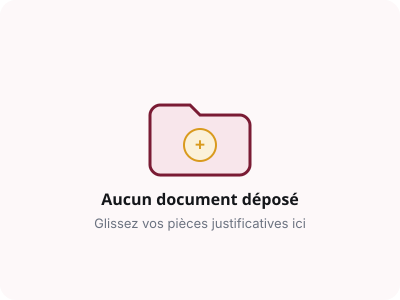

<!DOCTYPE html>
<html lang="fr">
<head>
  <meta charset="UTF-8">
  <meta name="viewport" content="width=device-width, initial-scale=1.0">
  <title>Mes Certificats Officiels — signw</title>
  <link rel="icon" type="image/png" href="../../favicon.png">

  <link rel="preconnect" href="https://fonts.googleapis.com">
  <link rel="preconnect" href="https://fonts.gstatic.com" crossorigin>
  <link href="https://fonts.googleapis.com/css2?family=Inter:wght@400;500;600;700&family=Plus+Jakarta+Sans:wght@700;800&display=swap" rel="stylesheet">

  <link rel="stylesheet" href="../../css/tokens.css">
  <link rel="stylesheet" href="../../css/base.css">
  <link rel="stylesheet" href="../../css/components.css">
  <link rel="stylesheet" href="../../css/layout.css">
  <link rel="stylesheet" href="../../css/pages.css">

  <style>
    @media print {
      body * { visibility: hidden; }
      #printable-certificate, #printable-certificate * { visibility: visible; }
      #printable-certificate {
        position: absolute;
        left: 0;
        top: 0;
        width: 100% !important;
        margin: 0 !important;
        box-shadow: none !important;
      }
    }
  </style>
</head>
<body class="app-layout">

  <aside class="app-sidebar" id="app-sidebar"></aside>

  <div class="app-container">
    <header class="app-header" id="app-header"></header>

    <main class="app-content" id="certificats-main-mount">
      <!-- Rendu dynamique JS -->
    </main>
  </div>

  <script src="../../js/data/seed.js"></script>
  <script src="../../js/core/utils.js"></script>
  <script src="../../js/core/store.js"></script>
  <script src="../../js/core/auth.js"></script>
  <script src="../../js/core/score.js"></script>
  <script src="../../js/core/ui.js"></script>
  <script src="../../js/core/layout.js"></script>

  <script>
    document.addEventListener('DOMContentLoaded', () => {
      if (!window.SignwAuth.requireAuth(['agent'])) return;
      renderCertificates();
    });

    function renderCertificates() {
      const user = window.SignwAuth.getCurrentUser();
      const agent = window.SignwStore.getAgentById(user.agentId) || window.SignwStore.getAgents()[0];
      const cert = window.SignwStore.getCertificationByAgent(agent.id);
      const mount = document.getElementById('certificats-main-mount');

      if (!cert) {
        mount.innerHTML = `
          <div style="margin-bottom: 24px;">
            <h2>Mes Certificats Officiels</h2>
            <span class="text-muted text-sm">Gérez et téléchargez vos titres de qualification vérifiés</span>
          </div>
          <div class="card text-center" style="padding: 48px;">
            
            <h4>Aucun certificat actif pour le moment</h4>
            <p class="text-muted" style="max-width: 480px; margin: 0 auto 20px;">
              Votre dossier de qualification est actuellement en cours d’audit. Votre certificat officiel sera émis automatiquement après validation de la décision d'audit.
            </p>
            <a href="dossier.html" class="btn btn-primary">Suivre mon dossier en cours →</a>
          </div>
        `;
        return;
      }

      mount.innerHTML = `
        <div style="display: flex; justify-content: space-between; align-items: center; margin-bottom: 28px; flex-wrap: wrap; gap: 16px;">
          <div>
            <h2 style="margin: 0 0 4px;">Certificat Officiel de Qualification</h2>
            <span class="text-muted text-sm">Code : <strong>${cert.code}</strong> • Statut : <span class="badge badge-certifie">ACTIF</span></span>
          </div>

          <div style="display: flex; gap: 10px;">
            <button class="btn btn-primary" onclick="window.print()">
              🖨️ Imprimer / Télécharger PDF
            </button>
            <button class="btn btn-secondary" onclick="copyVerificationLink('${cert.code}')">
              🔗 Copier le lien de vérification
            </button>
          </div>
        </div>

        <!-- Rendu du Certificat Officiel Haute Définition -->
        <div class="certificate-container" id="printable-certificate" style="position: relative; background: #FCFBF7 url('../../assets/img/certificate-bg.svg') no-repeat center; background-size: cover; border: 8px solid #7A1B34; outline: 3px solid #D99A1E; padding: 56px 64px; box-shadow: var(--shadow-xl); border-radius: 4px; margin-bottom: 40px;">
          
          <!-- En-tête officiel -->
          <div style="text-align: center; margin-bottom: 24px; border-bottom: 2px solid var(--gold-500); padding-bottom: 20px;">
            <div style="font-family: 'Plus Jakarta Sans', sans-serif; font-size: 0.875rem; font-weight: 800; letter-spacing: 2px; color: #7A1B34;">
              RÉPUBLIQUE DU CAMEROUN • PAIX - TRAVAIL - PATRIE
            </div>
            <div style="font-size: 0.75rem; color: var(--ink-500); margin-top: 4px; letter-spacing: 1px;">
              PLATEFORME NATIONALE TIERS DE CONFIANCE MARCHÉS PUBLICS & PRIVÉS
            </div>
            <h1 class="certificate-title" style="margin: 16px 0 6px; font-size: 2.2rem; color: #3B0D1A;">
              CERTIFICAT DE QUALIFICATION ET DE CONFIANCE
            </h1>
            <span style="font-size: 0.8125rem; font-weight: 700; color: #9A6B0A; background: #FBF1D9; padding: 4px 16px; border-radius: 99px; border: 1px solid #D99A1E;">
              CODE OFFICIEL : ${cert.code}
            </span>
          </div>

          <!-- Récipiendaire -->
          <div style="text-align: center; margin: 36px 0;">
            <div style="font-size: 0.9375rem; font-style: italic; color: var(--ink-500);">Le présent certificat est solennellement délivré à l’entreprise :</div>
            <div class="certificate-company" style="font-size: 2.1rem; font-weight: 800; color: #7A1B34; margin: 10px 0;">
              ${agent.raisonSociale}
            </div>
            <div style="font-size: 0.875rem; color: var(--ink-700);">
              Forme juridique : <strong>${agent.formeJuridique}</strong> • RCCM : <strong>${agent.rccm}</strong> • NIU : <strong>${agent.niu}</strong> • Siège : <strong>${agent.ville} (${agent.region})</strong>
            </div>
          </div>

          <!-- Décision d'audit & Niveau -->
          <div style="text-align: center; margin-bottom: 32px; background: rgba(255,255,255,0.7); padding: 18px; border-radius: 8px; border: 1px dashed var(--gold-500);">
            <div style="font-size: 0.95rem; color: var(--ink-700); margin-bottom: 8px;">
              Atteste qu’au terme de l’audit contradictoire de ses pièces juridiques, bilans comptables, matériels lourds et références chantiers, l’entreprise est reconnue apte au niveau :
            </div>
            <div style="font-size: 1.8rem; font-weight: 800; color: #B88015; font-family: 'Plus Jakarta Sans', sans-serif;">
              ★ NIVEAU ${cert.niveau.toUpperCase()} (SCORE DE CONFIANCE : ${cert.score} / 100) ★
            </div>
          </div>

          <!-- Grille des métadonnées et validité -->
          <div class="certificate-meta-grid" style="font-size: 0.875rem; margin-bottom: 36px; padding: 16px 24px; background: #F8E6EB; border-radius: 6px;">
            <div>
              <strong>Date d’émission officielle :</strong> ${window.SignwUtils.formatDateFR(cert.delivreeLe)}<br>
              <strong>Date d’échéance / Renouvellement :</strong> ${window.SignwUtils.formatDateFR(cert.expireLe)}
            </div>
            <div>
              <strong>Secteur certifié :</strong> BTP & Construction (Génie Civil)<br>
              <strong>Contrôle terrain effectué :</strong> OUI (Parc matériel audité)
            </div>
          </div>

          <!-- Sceau, QR et Signatures -->
          <div class="certificate-footer-signatures" style="padding-top: 20px;">
            <!-- Sceau officiel -->
            <div style="text-align: center;">
              
              <div style="font-size: 0.6875rem; font-weight: 700; color: var(--brand-900);">SCEAU OFFICIEL SIGNW</div>
            </div>

            <!-- QR code de vérification instantanée -->
            <div style="text-align: center;">
              
              <div style="font-size: 0.6875rem; color: var(--ink-500);">SCANNER POUR CONTRÔLER L’AUTHENTICITÉ</div>
            </div>

            <!-- Signature électronique certifiée -->
            <div style="text-align: center;">
              <div style="font-size: 0.75rem; color: var(--ink-500); margin-bottom: 6px;">Fait à Yaoundé, le ${window.SignwUtils.formatDateFR(cert.delivreeLe)}</div>
              <div style="font-family: 'Plus Jakarta Sans', sans-serif; font-size: 1.1rem; font-weight: 800; color: #1E3A8A; font-style: italic;">
                Commission Nationale d’Audit signw
              </div>
              <div style="font-size: 0.75rem; color: var(--ink-700); font-weight: 600;">Le Secrétaire Général & L'Administrateur Délégué</div>
            </div>
          </div>

        </div>
      `;
    }

    function copyVerificationLink(code) {
      const url = `${window.location.origin}/verifier.html?code=${code}`;
      navigator.clipboard.writeText(url).then(() => {
        window.SignwUI.showToast(`Lien public copié : ${url}`, 'success');
      }).catch(() => {
        prompt('Copiez ce lien :', url);
      });
    }
  </script>
</body>
</html>
